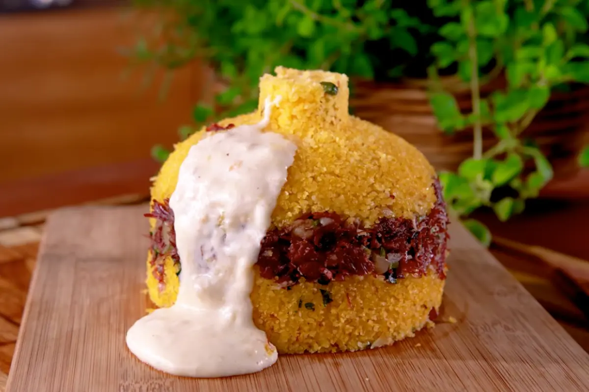

cuscuz rechado
ingredientes:
- 2 xícaras de flocão de milho
- 1 xícara de água
- 1 colher de chá de sal
- 1 colher de sopa de manteiga
recheio
- 200 g de carne de sol desfiada
- 150 g de queijo coalho picado
- 1/2 cebola picada
- 1 tomate picado
- 1 colher de sopa de manteiga
- Cheiro-verde a gosto
- Orégano a gosto (opcional)
preparo:
- Coloque o flocão de milho em uma tigela.
- Acrescente o sal e misture.
- Adicione a água aos poucos, mexendo bem.
- Deixe descansar por aproximadamente 10 minutos para hidratar.
- Coloque a massa na cuscuzeira e cozinhe por cerca de 10 a 15 minutos.
preparo do recheio:
- Em uma panela, derreta a manteiga.
- Acrescente a cebola picada e refogue.
- Adicione a carne de sol desfiada.
- Coloque o tomate e misture bem.
- Acrescente o cheiro-verde e reserve.
montagem:
- Divida o cuscuz pronto em duas partes.
- Coloque uma parte em um recipiente ou forma.
- Acrescente o recheio de carne de sol.
- Distribua o queijo coalho por cima.
- Cubra com o restante do cuscuz.
- Pressione levemente para deixar bem firme.
